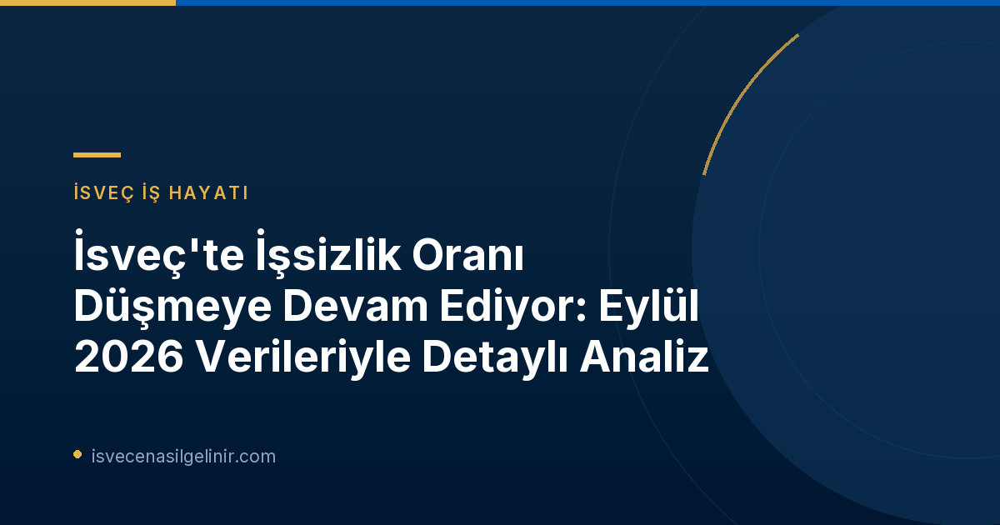

İşsizlikteki Olumlu Gelişmeler ve Genel Bakış
Arbetsförmedlingen'in açıklamasına göre, İsveç genelinde işsizlik oranı düşmeye devam ediyor. Kurumun işgücü piyasası analisti Marcus Löwing, "Pozitif trend devam ediyor; her geçen gün daha fazla kişi iş buluyor ve bize kayıt yaptıranların sayısı azalıyor" dedi. Eylül ayı içinde 35.000'den fazla kişinin istihdam edilmesi, bu olumlu gidişatın somut bir göstergesi.
Eylül 2026 sonu itibarıyla Arbetsförmedlingen'e kayıtlı işsiz sayısı yaklaşık 342.000 olarak gerçekleşti. Bu rakam, işgücünün %6,4'üne tekabül ediyor ve geçen yılın aynı ayına kıyasla 22.000 kişilik önemli bir düşüşü ifade ediyor. İşsizlikteki bu gerileme, hem erkekler hem de kadınlar, yerli ve yabancı kökenliler ile gençler arasında gözlemleniyor. Gençler, giderek artan bir şekilde işe veya eğitime yöneliyor.
Ancak, her grup için durum aynı derecede parlak değil. İş yapma kapasitesi kısıtlı olan engelli bireyler ile 55-66 yaş aralığındaki işsizler için gelişmeler ne yazık ki bu kadar olumlu seyretmedi. Marcus Löwing, konjonktürün güçlenmeye devam ettiğini ve işgücü piyasasının toparlanma sürecinde olduğunu belirtse de, işsizliğin hala yüksek olduğunu ve işsiz grupları arasında farklılıklar gösterdiğini vurguladı.
Eylül 2026 İsveç İşgücü Piyasası Verileri: Kapsamlı Bir Analiz
Arbetsförmedlingen'in Eylül 2026 faaliyet istatistikleri, İsveç işgücü piyasasının mevcut durumu hakkında değerli bilgiler sunuyor. Aşağıdaki tabloda, Eylül 2026 ve Eylül 2025 verileri karşılaştırmalı olarak gösterilmiştir:
| Gösterge | Eylül 2026 | Eylül 2025 (Parantez İçinde) |
|---|---|---|
| İşsiz Olarak Kayıtlıların Oranı | %6,4 | (%6,9) |
| Toplam İşsiz Sayısı | 341.901 kişi | (363.658 kişi) |
| 18-24 Yaş Arası Genç İşsizlik Oranı | %7,7 | (%8,1) |
| Toplam Genç İşsiz Sayısı | 41.631 genç | (43.544 genç) |
| 12 Ay veya Daha Uzun Süredir İşsiz Olanlar | 147.333 kişi | (153.845 kişi) |
| Açık İşsizler | 192.418 kişi | (198.510 kişi) |
| Aktivite Desteği Programlarına Katılanlar | 149.483 kişi | (165.148 kişi) |
| İş Arayan Olarak Kayıt Yaptıranlar | 35.848 kişi | (39.021 kişi) |
| İş Bulan Kişiler | 35.261 kişi | (34.668 kişi) |
| İşten Çıkarılacağı Bildirilenler | 5.487 kişi | (5.057 kişi) |
Bu veriler, işsizlik oranlarında genel bir iyileşme olduğunu açıkça göstermektedir. Özellikle genç işsizliği ve uzun süreli işsizlikte belirgin düşüşler kaydedilmiştir. Ancak, işten çıkarılacağı bildirilen kişi sayısındaki hafif artış, piyasadaki bazı dalgalanmaların devam ettiğine işaret edebilir. İsveç'te yaşam ve çalışma koşulları hakkında daha fazla bilgi edinmek için sverigemedborgarskapsprov.com adresini ziyaret edebilirsiniz.
İşsizlik İstatistiklerinin Arkasındaki Gerçekler: Arbetsförmedlingen ve SCB Farkı
İsveç'teki işgücü piyasası istatistiklerini yorumlarken, Arbetsförmedlingen ve İsveç İstatistik Kurumu (Statistiska centralbyrån - SCB) arasındaki farkı anlamak önemlidir.
Bilgi Kutusu: İstatistik Kaynakları
- Arbetsförmedlingen: Kendi kayıtlarına dayalı faaliyet istatistiklerini yayınlar. Bu istatistikler, kuruma kayıtlı işsizleri ve iş arayanları kapsar. İşsiz olarak kayıtlı olanlar; işi olmayan, aktif olarak iş arayan ve hemen işe başlayabilecek durumda olan "açık işsizler" ile aktivite desteği programlarındaki "iş arayanlar" olmak üzere iki ana grubu içerir.
- SCB (Statistiska centralbyrån): İsveç'in resmi işsizlik istatistiklerini "İşgücü Araştırması (Arbetskraftsundersökning - AKU)" aracılığıyla yayımlar. AKU, daha geniş bir anket tabanlı yöntemle belirlenen işgücü piyasası verilerini sunar ve uluslararası standartlara daha uygun kabul edilir.
2024 yılında işgücü büyüklüğünün ve dolayısıyla bağıl işsizlik seviyesinin hesaplanma metodolojisinde bir değişiklik yapıldığı belirtilmiştir. Ayrıca, 2026 istatistikleri 16-66 yaş aralığını kapsarken, 2025 istatistikleri 16-65 yaş aralığını kapsamaktadır. Bu metodolojik farklılıklar ve yaş aralığı değişiklikleri, yıllar arası karşılaştırmalarda dikkate alınması gereken önemli detaylardır.
Gelecek Beklentileri ve İş Arayanlar İçin Öneriler
Arbetsförmedlingen, Ekim ayına ait faaliyet istatistiklerini 12 Kasım 2026 tarihinde saat 06:00'da yayınlayacak. Bu yeni veriler, işgücü piyasasındaki trendin devam edip etmeyeceği konusunda daha net bir tablo sunacaktır. Mevcut pozitif gidişat, iş arayanlar için umut verici olsa da, piyasayı yakından takip etmek ve kişisel gelişimlere odaklanmak önem taşımaktadır.
İş Arayanlar İçin Genel Tavsiyeler:
- Sürekli Gelişim: İşgücü piyasasının dinamik yapısına ayak uydurmak için yeni beceriler kazanmaya veya mevcut becerileri geliştirmeye odaklanın. Eğitim ve sertifika programları bu konuda size yardımcı olabilir.
- Ağ Oluşturma: Profesyonel ağınızı genişletmek, potansiyel iş fırsatlarına ulaşmanızda kilit rol oynar. Sektörel etkinliklere katılın, LinkedIn gibi platformları aktif kullanın.
- Özgeçmiş ve Motivasyon Mektubu: Başvurularınızda öne çıkmak için özgeçmişinizi ve motivasyon mektubunuzu her başvuruya özel olarak güncelleyin ve pozisyona uygun hale getirin.
- Danışmanlık Hizmetleri: Arbetsförmedlingen gibi kurumların sunduğu danışmanlık ve rehberlik hizmetlerinden faydalanarak kariyer hedeflerinizi netleştirebilirsiniz.
Referanslar:
- Arbetsförmedlingen Pressmeddelande: https://arbetsformedlingen.se/om-oss/press/pressmeddelanden?id=CF008E28B1CD5091&pageIndex=1&year=0&uniqueIdentifier=
- İsveç Vatandaşlık Testi Bilgileri: sverigemedborgarskapsprov.com
İsveç'te Kariyer Fırsatları ve Yaşam Rehberleri
İsveç'teki çalışma hayatı, göçmenlik süreçleri ve vatandaşlık başvuruları hakkında en güncel ve kapsamlı bilgilere ulaşmak için sitemizi keşfedin.